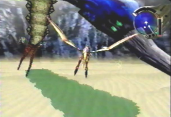
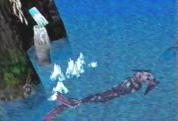
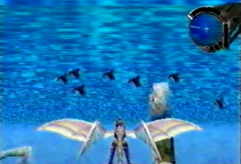

A domesticated Coolia.
As we all know, supposedly, all of the creatures in the Panzer Dragoon world, either mutated or pure blood, were created by the Ancients.
But where are the creatures that originally inhabited the planet? For example: like Earth's mammals. The only creatures that seem to have not been altered or created by the ancients are: the Conana birds at the excavation site, the sand worms in the Garil desert, the forest worms in the Forest of Zoah, the many species of sea creatures swimming about under the water in the Uru Passage, and the mother tobitama with her young at the Uru ruins in Panzer Dragoon Saga.
These creatures are absent from the creature list in the game. So does this mean that these creatures are not mutated or pure blood? Are they the only original species?
The only domesticated animal similar to a dog that seems to be unaltered is the Coolia. None of the inhabitants in Zoah or the caravan have any domesticated animals other than the Coolia.
Did the Ancients alter and experiment on all original creatures on the planet for their own maniacal purposes? One reason why we don't see any unaltered creatures Most likely is because the biological creatures with their enhanced abilities, could have made the unaltered creatures their main food source, resulting in their utter extinction. Survival of the fittest.
Another theory could have been the altering of the environment, by the Towers. With the drastic change in the environment, the unaltered creatures could have been killed off, lacking the necessary survival skills of the biologically enhanced creatures to adapt to their environments.
Were there any original unaltered creatures in the world
of Panzer Dragoon? We might never truly know the answer but we can always
make our assumptions.

Conana Birds

Sand Worm

Forest Worm

Kinoshita Whale

Uru Eel

Uru Fish

Uru Seal-like creature

Tobitama
Are all of these creatures, the only natural creatures left in the Panzer Dragoon world? You decide!